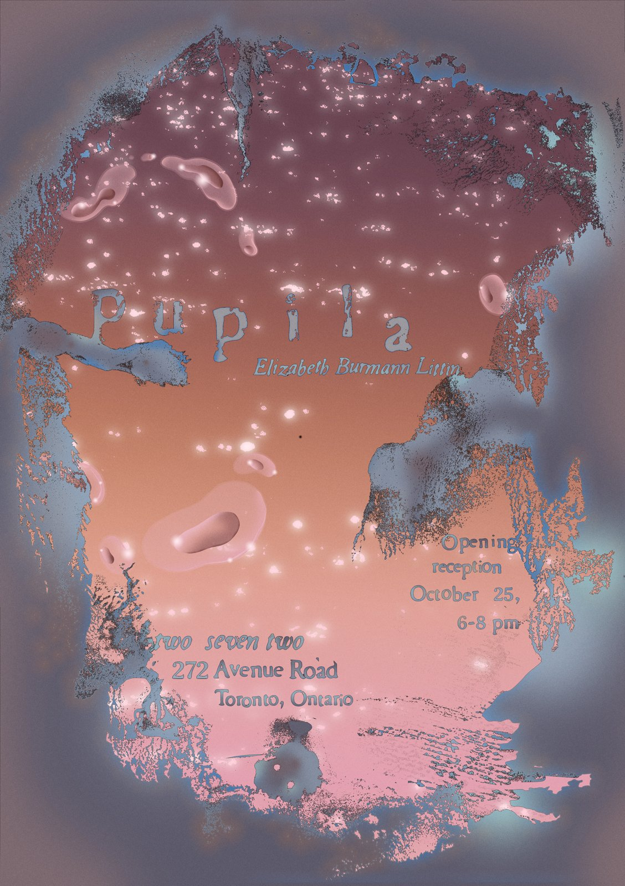

Pupila

Pieza gráfica para la exposición "Pupila" de Elizabeth Burmann Littin, en Two Seven Two (272 Avenue Road, Toronto, Ontario).

Pieza gráfica para la exposición "Pupila" de Elizabeth Burmann Littin, en Two Seven Two (272 Avenue Road, Toronto, Ontario).